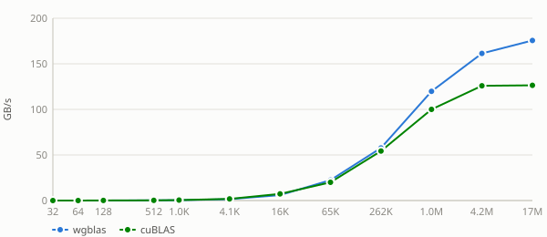
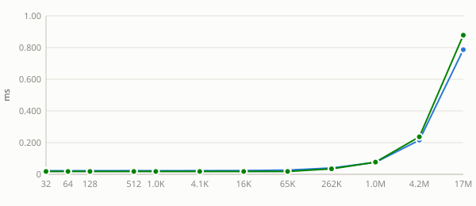

Unless noted otherwise, every result above uses unit stride (incx = incy = 1) — the normal case, and the coalesced, best-case GPU access pattern. Real usage sometimes passes a non-unit stride (e.g. operating on a row or column of a larger matrix, where incx = lda), which breaks memory coalescing and costs measurably more. This section sweeps a few representative strides to characterize that cost separately, collapsed below by default — expand a stride to see its table and chart.
Benchmark results for dasum on Nvidia Geforce Gtx 1650.
Nvidia Geforce Gtx 1650 — wgblas vs cuBLAS


See also
Stride sweep
Unless noted otherwise, every result above uses unit stride (
incx = incy = 1) — the normal case, and the coalesced, best-case GPU access pattern. Real usage sometimes passes a non-unit stride (e.g. operating on a row or column of a larger matrix, whereincx = lda), which breaks memory coalescing and costs measurably more. This section sweeps a few representative strides to characterize that cost separately, collapsed below by default — expand a stride to see its table and chart.Nvidia Geforce Gtx 1650 — stride = 4
Nvidia Geforce Gtx 1650 — stride = 32
Nvidia Geforce Gtx 1650 — stride = 256
See also: